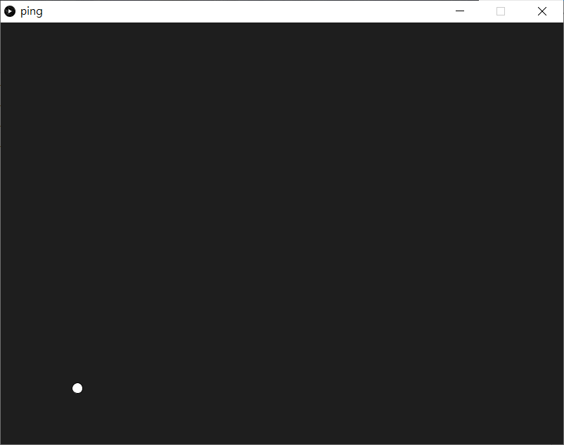
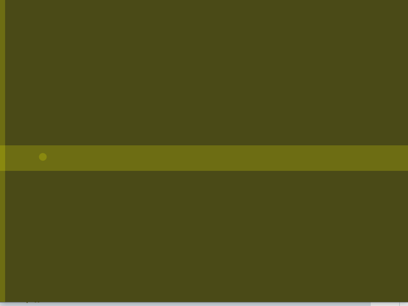
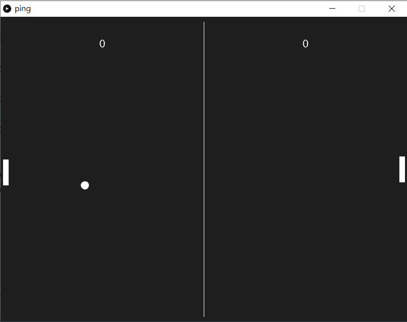

Pong Game
《乓》（英語：Pong）是雅達利在1972年11月29日推出的一款投幣式街機遊戲。《乓》是一款乒乓球遊戲，其英文名稱「Pong」來自乒乓球被擊打後所發出的聲音。《乓》很多時候也被認為是電子遊戲歷史上第一個街機電子遊戲。在此遊戲中，玩家的目的就是在模擬乒乓球比賽中奪取高分以擊敗電腦玩家。此遊戲的開發者為艾倫·奧爾康。

Pong Game0. 本章重點1. 開始遊戲2 令球移動創建一個會動的球令球懂得撞牆反彈3. 製作player1球拍製作球拍令球拍懂得反彈球4. 製作player2球拍5. 計分6. 重啟遊戲7. 考考你附錄. 同一時間操控多個按鍵(選項)
0. 本章重點
建立processing.py程式最基本函數
劃圓和長方型
認識變數，認識
global認識keyPressed鍵盤輸入
1. 開始遊戲
1def setup():2 size(800, 600)3def draw():4 ellipse(width/2, height/2, 15, 15)
Processing.py程式碼內置兩個函數
setup()只會在程式執行時執行一次
通常用來初始化程式
draw()類似Arduino中的
loop()會不斷重複執行
通常用來實現動畫和互動等功能
width和height是關鍵字對應
size()中的長和寬
下一步，就要令中間的球移動
2 令球移動
創建一個會動的球
x1ballX=02ballY=03ballSpeedX=04ballSpeedY=05
6def setup():7 global ballX, ballY, ballSpeedX, ballSpeedY8 9 size(800, 600)10 ballX = width/211 ballY = height/212 ballSpeedX = -113 ballSpeedY = random(-2, 2)14 15def draw():16 global ballX, ballY, ballSpeedX, ballSpeedY17 18 background(30)19 ballX += ballSpeedX20 ballY += ballSpeedY21 ellipse(ballX, ballY, 15, 15)
xxxxxxxxxx41ballX=02ballY=03ballSpeedX=04ballSpeedY=0創建4個變數，分別為ballX, ballY, ballSpeedX和ballSpeedY。對應的是球的x和y座標，球的x和y的速度。之後在setup()中預設球的位置和初速。(之所以不在一開始宣告就設定它們的值，而是在setup()中，是因為之後restart game時會方便很多)
xxxxxxxxxx11global ballX, ballY, ballSpeedX, ballSpeedYPython語言跟其他語言比有點特別，所有的global變數，不需要特別宣告，就可以在所有函數中應用，但如果要在函數中要改變global變數的話，就需要在函數之內用keyword global將global變數宣告一次。
xxxxxxxxxx41ballX = width/22ballY = height/23ballSpeedX = -14ballSpeedY = random(-2, 2)一開始球在瑩幕正中，預設向player1(左邊)放向發去，所以ballSpeedX一開始是-1。
xxxxxxxxxx21ballX += ballSpeedX2ballY += ballSpeedY之後每次draw()不停重覆時，就更新球的x和y座標，將其加上球的速度，這樣球就會不停移動。
令球懂得撞牆反彈
xxxxxxxxxx251ballX=02ballY=03ballSpeedX=04ballSpeedY=05
6def setup():7 global ballX, ballY, ballSpeedX, ballSpeedY8 9 size(800, 600)10 ballX = width/211 ballY = height/212 ballSpeedX = -113 ballSpeedY = random(-2, 2)14 15def draw():16 global ballX, ballY, ballSpeedX, ballSpeedY17 18 background(30)19 ballX += ballSpeedX20 ballY += ballSpeedY21 22 if ballY <= 0 or ballY >= height:23 ballSpeedY *= -1;24 25 ellipse(ballX, ballY, 15, 15)
xxxxxxxxxx21if ballY <= 0 or ballY >= height:2 ballSpeedY *= -1;要令球懂得在上和上反彈，就要知道它的y座標，所以就用if去判斷它的y座標，如果是少於0或者大於height的話，則代表球已經出界，超出瑩幕範圍，這時就將球的y速度反轉，球就會反彈。(這也是為什麼需要特別去設定一個球的x和y速度的變數，而不直接用ballX+=1或ballY+=1)
3. 製作player1球拍
製作球拍
xxxxxxxxxx401ballX=02ballY=03ballSpeedX=04ballSpeedY=05
6player1X = 07player1Y = 08
9def setup():10 global ballX, ballY, ballSpeedX, ballSpeedY, player1X, player1Y11 12 size(800, 600)13 ballX = width/214 ballY = height/215 ballSpeedX = -116 ballSpeedY = random(-2, 2)17 18 player1X = 1019 player1Y = height/220 21def draw():22 global ballX, ballY, ballSpeedX, ballSpeedY, player1X, player1Y23 24 background(30)25 ballX += ballSpeedX26 ballY += ballSpeedY27 28 if ballY <= 0 or ballY >= height:29 ballSpeedY *= -1;30 31 ellipse(ballX, ballY, 15, 15)32 33 if keyPressed:34 if key == 'W' or key == 'w':35 player1Y -= 336 if key == 'S' or key == 's':37 player1Y += 338 39 rectMode(CENTER)40 rect(player1X, player1Y, 10, 50)
下一部就是要製作player的球拍，球拍我們用一個長方形去表示。
xxxxxxxxxx21player1X = 02player1Y = 0宣告2個變數，是球拍中心的xy座標位置。
xxxxxxxxxx21player1X = 102player1Y = height/2在setup()處，設定球拍的初始位置。
xxxxxxxxxx81if keyPressed:2 if key == 'W' or key == 'w':3 player1Y -= 34 if key == 'S' or key == 's':5 player1Y += 36
7rectMode(CENTER)8rect(player1X, player1Y, 10, 50)在draw()的最下面，加入控制球拍的指令。keyPress為keyword，當你鍵盤任意按鍵初按下時就會是True，相反則為False。key也是keyword，用來回傳鍵盤按下的鍵相應的值，但值得注意的是，key並不會自動測空，舉例如果按了一下k，在按下一個按鍵之前，key會一直都是k
令球拍懂得反彈球
xxxxxxxxxx431ballX=02ballY=03ballSpeedX=04ballSpeedY=05
6player1X = 07player1Y = 08
9def setup():10 global ballX, ballY, ballSpeedX, ballSpeedY, player1X, player1Y11 12 size(800, 600)13 ballX = width/214 ballY = height/215 ballSpeedX = -116 ballSpeedY = random(-2, 2)17 18 player1X = 1019 player1Y = height/220 21def draw():22 global ballX, ballY, ballSpeedX, ballSpeedY, player1X, player1Y23 24 background(30)25 ballX += ballSpeedX26 ballY += ballSpeedY27 28 if ballY <= 0 or ballY >= height:29 ballSpeedY *= -130 31 if ballX <= 10 and ballY >= player1Y - 25 and ballY <= player1Y +25:32 ballSpeedX *= -133 34 ellipse(ballX, ballY, 15, 15)35 36 if keyPressed:37 if key == 'W' or key == 'w':38 player1Y -= 339 if key == 'S' or key == 's':40 player1Y += 341 42 rectMode(CENTER)43 rect(player1X, player1Y, 10, 50)
xxxxxxxxxx21if ballX <= 10 and ballY >= player1Y - 25 and ballY <= player1Y +25:2 ballSpeedX *= -1加入這一段程式，當球的中心座標符合三個範圍的話，球就會反彈(為簡化程式，沒有計算球的半徑，你可以自行考慮加入)

4. 製作player2球拍
xxxxxxxxxx561ballX=02ballY=03ballSpeedX=04ballSpeedY=05
6player1X = 07player1Y = 08
9player2X = 010player2Y = 011
12def setup():13 global ballX, ballY, ballSpeedX, ballSpeedY, player1X, player1Y, player2X, player2Y14 15 size(800, 600)16 ballX = width/217 ballY = height/218 ballSpeedX = -119 ballSpeedY = random(-2, 2)20 21 player1X = 1022 player1Y = height/223 24 player2X = width - 1025 player2Y = height/226 27def draw():28 global ballX, ballY, ballSpeedX, ballSpeedY, player1X, player1Y, player2X, player2Y29 30 background(30)31 ballX += ballSpeedX32 ballY += ballSpeedY33 34 if ballY <= 0 or ballY >= height:35 ballSpeedY *= -136 37 if ballX <= 10 and ballY >= player1Y - 25 and ballY <= player1Y +25:38 ballSpeedX *= -139 40 if ballX >= width - 10 and ballY >= player2Y - 25 and ballY <= player2Y +25:41 ballSpeedX *= -142 43 ellipse(ballX, ballY, 15, 15)44 45 if keyPressed:46 if key == 'W' or key == 'w':47 player1Y -= 348 if key == 'S' or key == 's':49 player1Y += 350 if key == 'O' or key == 'o':51 player2Y -= 352 if key == 'L' or key == 'l':53 player2Y += 354 rectMode(CENTER)55 rect(player1X, player1Y, 10, 50)56 rect(player2X, player2Y, 10, 50)
xxxxxxxxxx21player2X = 02player2Y = 0同樣地，加入變數去記錄球拍2的座標。
xxxxxxxxxx21player2X = width - 102player2Y = height/2在setup()中設定初始值。
xxxxxxxxxx21if ballX >= width - 10 and ballY >= player2Y - 25 and ballY <= player2Y +25:2 ballSpeedX *= -1跟player1的球拍一樣，player2的球拍，要加入判斷式，如果球的x座標大於width-10，即player2球拍的右邊，同一時間又介乎於球拍的y輻範圍當中，就會反彈。
xxxxxxxxxx11rect(player2X, player2Y, 10, 50)最後將player2的球拍畫出來。
5. 計分
xxxxxxxxxx831ballX=02ballY=03ballSpeedX=04ballSpeedY=05
6player1X = 07player1Y = 08
9player2X = 010player2Y = 011
12score1 = 013score2 = 014
15def setup():16 global ballX, ballY, ballSpeedX, ballSpeedY, player1X, player1Y, player2X, player2Y, score1, score217 18 size(800, 600)19 ballX = width/220 ballY = height/221 ballSpeedX = -122 ballSpeedY = random(-2, 2)23 24 player1X = 1025 player1Y = height/226 27 player2X = width - 1028 player2Y = height/229 30 score1 = 031 score2 = 032 33def draw():34 global ballX, ballY, ballSpeedX, ballSpeedY, player1X, player1Y, player2X, player2Y, score1, score235 36 background(30)37 ballX += ballSpeedX38 ballY += ballSpeedY39 40 if ballY <= 0 or ballY >= height:41 ballSpeedY *= -142 43 if ballX <= 10 and ballY >= player1Y - 25 and ballY <= player1Y +25:44 ballSpeedX *= -145 46 if ballX >= width - 10 and ballY >= player2Y - 25 and ballY <= player2Y +25:47 ballSpeedX *= -148
49 if ballX <= 0:50 score2+=151 ballX = width/252 ballY = height/253 ballSpeedX = 154 ballSpeedY = random(-2, 2)55 56 if ballX >= width:57 score1+=158 ballX = width/259 ballY = height/260 ballSpeedX = -161 ballSpeedY = random(-2, 2)62 63 ellipse(ballX, ballY, 15, 15)64 65 if keyPressed:66 if key == 'W' or key == 'w':67 player1Y -= 368 if key == 'S' or key == 's':69 player1Y += 370 if key == 'O' or key == 'o':71 player2Y -= 372 if key == 'L' or key == 'l':73 player2Y += 374 rectMode(CENTER)75 rect(player1X, player1Y, 10, 50)76 rect(player2X, player2Y, 10, 50)77 78 textSize(60)79 textAlign(CENTER, CENTER)80 text(score1, width/4, 50)81 text(score2, width*3/4, 50)82 stroke(255)83 line(width/2, 10, width/2, height - 10)
xxxxxxxxxx21score1 = 02score2 = 0先宣告兩個變數去儲存兩個玩家的分數。再在setup()時設定為0
xxxxxxxxxx131if ballX <= 0:2 score2+=13 ballX = width/24 ballY = height/25 ballSpeedX = 16 ballSpeedY = random(-2, 2)7
8if ballX >= width:9 score1+=110 ballX = width/211 ballY = height/212 ballSpeedX = -113 ballSpeedY = random(-2, 2)如果球的x座標少於0或者大於width，則代表球已經出了界，這時就要為相對應的玩家加上一分，而球的球速也要重新放到起始點再來一局。
xxxxxxxxxx61textSize(60)2textAlign(CENTER, CENTER)3text(score1, width/4, 50)4text(score2, width*3/4, 50)5stroke(255)6line(width/2, 10, width/2, height - 10)最後，在draw()的最底下，加上文字，用來顯示兩個分數。
6. 重啟遊戲
xxxxxxxxxx861ballX = 02ballY = 03ballSpeedX = 04ballSpeedY = 05
6player1X = 07player1Y = 08
9player2X = 010player2Y = 011
12score1 = 013score2 = 014
15def setup():16 global ballX, ballY, ballSpeedX, ballSpeedY, player1X, player1Y, player2X, player2Y, score1, score217 18 size(800, 600)19 ballX = width/220 ballY = height/221 ballSpeedX = -122 ballSpeedY = random(-2, 2)23 24 player1X = 1025 player1Y = height/226 27 player2X = width - 1028 player2Y = height/229 30 score1 = 031 score2 = 032 33 34def draw():35 global ballX, ballY, ballSpeedX, ballSpeedY, player1X, player1Y, player2X, player2Y, score1, score236 37 background(30)38 ballX += ballSpeedX39 ballY += ballSpeedY40 41 if ballY <= 0 or ballY >= height:42 ballSpeedY *= -143 44 if ballX <= 10 and ballY >= player1Y - 25 and ballY <= player1Y +25:45 ballSpeedX *= -146 47 if ballX >= width - 10 and ballY >= player2Y - 25 and ballY <= player2Y +25:48 ballSpeedX *= -149 50 if ballX <=0:51 score2 += 152 ballX = width/253 ballY = height/254 ballSpeedX = 155 ballSpeedY = random(2, -2)56
57 if ballX >= width:58 score1 += 159 ballX = width/260 ballY = height/261 ballSpeedX = 162 ballSpeedY = random(2, -2) 63 64 ellipse(ballX, ballY, 15,15)65 66 if keyPressed:67 if key == 'W' or key == 'w':68 player1Y -=369 if key == 'S' or key == 's':70 player1Y +=371 if key == 'O' or key == 'o':72 player2Y -=373 if key == 'L' or key == 'l':74 player2Y +=375 if key == 'R' or key == 'r':76 setup() 77 rectMode(CENTER)78 rect(player1X, player1Y, 10, 50)79 rect(player2X, player2Y, 10, 50)80 81 textSize(60)82 textAlign(CENTER, CENTER)83 text(score1, width/4, 50)84 text(score2, width*3/4, 50)85 stroke(255)86 line(width/2, 10, width/2, height - 10)
xxxxxxxxxx21if key == 'R' or key == 'r':2 setup() 在按鍵當中，加入指令，如果按下r鍵的話，就重新執行一次setup()，將所有變數都變回預設值，這也是為甚麼我們經常多此一舉，明明一開始已宣告了一個變數，但又要在setup()中設定它的值多一次。
7. 考考你
請自行為遊戲加入：
嘗試加快球和球拍的移動速度；
球並非一接觸到球拍就會立即反彈，如果將球拍和球一放大就會尤其明顯，嘗試將球接觸到球拍的時機修改一下令遊戲看起來更正常；
將球拍的長度設定成一個變數，另外開設變數(例如叫
counter1,counter2)，球每次撞上球拍，counter1或counter2都會對應地加1(視乎撞上的是player1還是player2)，而隨著每次球撞到球拍，球拍的長度都會相應地減少，令遊戲越來越難玩。
附錄. 同一時間操控多個按鍵(選項)
這一節的內容會比較進階，內面的內容會涉及到列表(list), 函數(function)和event，建議你可以先看看第二節的內容再回來修改這一節的遊戲。
當你自己一個人在測試時，你應該不太會發現這問題，但如果真的兩個人一起玩時，就會發現，當一個人在按按鍵，另一個玩家就會停下來。這是因為在processing.py的程式，在每次draw()執行時key只會有一個值，所以當一個按鍵按下時，另一個是不會有反應的。
要解決這個問題，就需要有一個變數去紀錄低按鍵的變化。
xxxxxxxxxx1071ballX = 02ballY = 03ballSpeedX = 04ballSpeedY = 05
6player1X = 07player1Y = 08
9player2X = 010player2Y = 011
12score1 = 013score2 = 014
15Keys = [False, False, False, False, False]16
17def setup():18 global ballX, ballY, ballSpeedX, ballSpeedY, player1X, player1Y, player2X, player2Y, score1, score219 20 size(800, 600)21 ballX = width/222 ballY = height/223 ballSpeedX = -124 ballSpeedY = random(-2, 2)25 26 player1X = 1027 player1Y = height/228 29 player2X = width - 1030 player2Y = height/231 32 score1 = 033 score2 = 034 35 36def draw():37 global ballX, ballY, ballSpeedX, ballSpeedY, player1X, player1Y, player2X, player2Y, score1, score238 39 background(30)40 ballX += ballSpeedX41 ballY += ballSpeedY42 43 if ballY <= 0 or ballY >= height:44 ballSpeedY *= -145 46 if ballX <= 10 and ballY >= player1Y - 25 and ballY <= player1Y +25:47 ballSpeedX *= -148 49 if ballX >= width - 10 and ballY >= player2Y - 25 and ballY <= player2Y +25:50 ballSpeedX *= -151 52 if ballX <=0:53 score2 += 154 ballX = width/255 ballY = height/256 ballSpeedX = 157 ballSpeedY = random(2, -2)58
59 if ballX >= width:60 score1 += 161 ballX = width/262 ballY = height/263 ballSpeedX = 164 ballSpeedY = random(2, -2) 65 66 ellipse(ballX, ballY, 15,15)67 68 if Keys[0] and player1Y > 0:69 player1Y -=370 if Keys[1] and player1Y < height:71 player1Y +=372 if Keys[2] and player2Y > 0:73 player2Y -=374 if Keys[3] and player2Y < height:75 player2Y +=376 if Keys[4]:77 setup()78 79 rectMode(CENTER)80 rect(player1X, player1Y, 10, 50)81 rect(player2X, player2Y, 10, 50)82 83 textSize(60)84 textAlign(CENTER, CENTER)85 text(score1, width/4, 50)86 text(score2, width*3/4, 50)87 stroke(255)88 line(width/2, 10, width/2, height - 10)89 90def setKey(input, state):91 if input == 'W' or input == 'w':92 Keys[0] = state93 if input == 'S' or input == 's':94 Keys[1] = state95 if input == 'O' or input == 'o':96 Keys[2] = state97 if input == 'L' or input == 'l':98 Keys[3] = state99 if input == 'R' or input == 'r':100 Keys[4] = state101
102def keyPressed():103 setKey(key, True)104
105
106def keyReleased():107 setKey(key, False)
xxxxxxxxxx11Keys = [False, False, False, False, False]在程式的最上方宣告變數中，開一個Keys的列表(list)變數。至於列表(list)是甚麼，可以參考這裡。
xxxxxxxxxx181def setKey(input, state):2 if input == 'W' or input == 'w':3 Keys[0] = state4 if input == 'S' or input == 's':5 Keys[1] = state6 if input == 'O' or input == 'o':7 Keys[2] = state8 if input == 'L' or input == 'l':9 Keys[3] = state10 if input == 'R' or input == 'r':11 Keys[4] = state12
13def keyPressed():14 setKey(key, True)15
16
17def keyReleased():18 setKey(key, False)在程式的最低下，新增3個函數。由於在draw()的內置變數key每次只會有一個值，所以我們新增一個函數(function)叫setKey()，當每次特定的按鍵(w, s, o, l, r)按下時，就將相對應的Keys[]內容轉成True，相反當按鍵釋放時就設為False。
xxxxxxxxxx101if Keys[0] and player1Y > 0:2 player1Y -=33if Keys[1] and player1Y < height:4 player1Y +=35if Keys[2] and player2Y > 0:6 player2Y -=37if Keys[3] and player2Y < height:8 player2Y +=39if Keys[4]:10 setup()最後在draw()中，將原本的按鍵部分，修改成剛剛設定的Keys[]列表，順便也加一些限制給它以免玩家的球拍會飛出畫面以外。